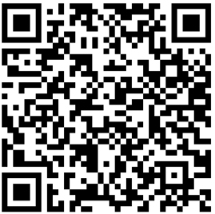

Al escanear el siguiente código QR tendréis acceso a la playlist de Spotify que escuché mientras escribía este libro, que aunque no es la música que frecuento escuchar, me ha ayudado bastante a concentrarme mientras escribía. Me haría una especial ilusión que vosotros y vosotras escuchaseis todas estas canciones mientras leéis Distrito Zero y así logréis sumergiros en su mundo de la misma manera que lo hice yo. Muchas gracias a todos los lectores que entren en ella y gracias especialmente a Eloy Moreno por inspirarme a escribir y a elaborar una playlist para vosotros.
